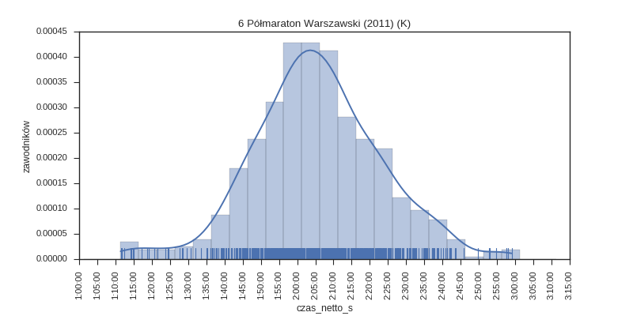
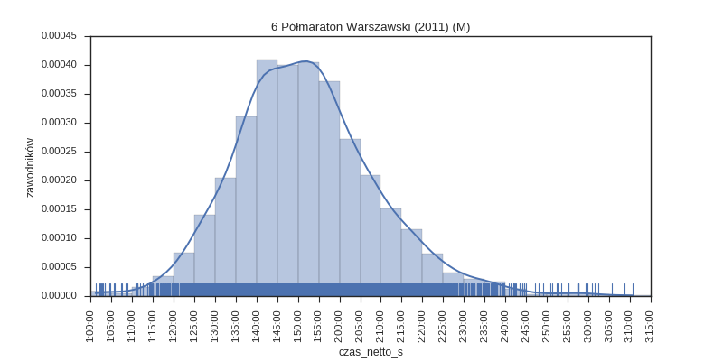
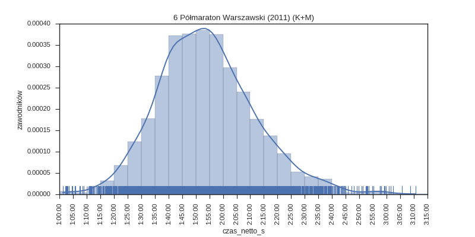

6 Półmaraton Warszawski (2011)
Histogramy
kobiety

mężczyźni

wszyscy

Wykresy rybkowe
wg płci

| plec | K | M | ||||||||||||
|---|---|---|---|---|---|---|---|---|---|---|---|---|---|---|
| mean | std | min | 25% | 50% | 75% | max | mean | std | min | 25% | 50% | 75% | max | |
| czas | 2:05:26 | 0:17:37 | 1:11:26 | 1:54:33 | 2:04:48 | 2:16:13 | 2:59:00 | 1:52:02 | 0:17:11 | 1:01:17 | 1:40:31 | 1:50:53 | 2:01:56 | 3:10:38 |
Liczba uczestników: 4700
Wygenerowano: 2016-03-23 22:54:51.931770